🔗 Relaciones en diagramas de clases¶
Descarga de diapositivas
En cualquier programa orientado a objetos hay varias clases que se relacionan entre sí. En UML, esas relaciones tienen nombre y notación propia.
1. Asociación¶
Es la relación más común: se da cuando una clase tiene un atributo de tipo otra clase. En Java se traduce en que una clase guarda una referencia a la otra.
Unidireccional¶
Solo una clase conoce a la otra. A la dirección en la que se puede "viajar" por una asociación se le llama navegabilidad, y es lo que indica la flecha: una línea con flecha que apunta desde la clase que "conoce" hacia la que "es conocida" es una asociación de navegabilidad unidireccional. Un Cliente puede tener una lista de Pedido, pero Pedido no sabe nada de Cliente.
La misma relación se puede modelar en cualquiera de las dos direcciones, y el código cambia según quién guarda la referencia a quién:
| Java | |
|---|---|
Cliente hacia Pedido, con el rol pedidos en el extremo de Pedido.
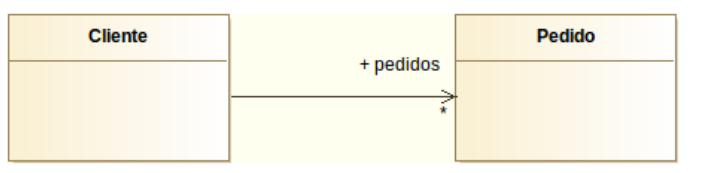
| Java | |
|---|---|
Pedido hacia Cliente, con el rol cliente en el extremo de Cliente.
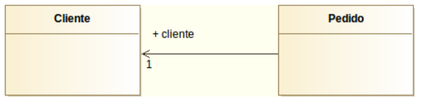
Regla práctica
Mira quién declara el atributo del tipo de la otra clase: esa es la clase "de la que sale la flecha". Si tienes dudas sobre el sentido de una asociación, piensa en qué objeto necesitas tener en la mano para poder llamar al otro.
Bidireccional¶
Ambas clases se conocen mutuamente: la navegabilidad es bidireccional. Se representa con una línea sin flechas. Compárala con las dos anteriores: aquí aparecen los roles cliente y pedidos a la vez, en los dos extremos, y ninguna punta de flecha:
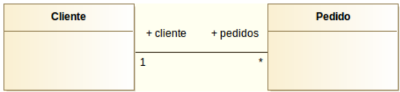
Cuidado
Las asociaciones bidireccionales no llevan flecha en ninguno de los dos extremos.
Roles¶
El rol es el nombre que toma una clase dentro de la relación; equivale al nombre del atributo en Java. Se escribe en el extremo opuesto a la clase que lo contiene: el rol de Pedido en Cliente sería pedidos (en plural, porque hay varios), y el rol de Cliente en Pedido sería cliente.
Ver la misma asociación construida paso a paso en DIA ayuda a entender qué añade cada elemento (rol, flecha, multiplicidad):
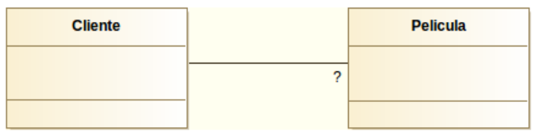
Error frecuente
Si ya has dibujado la relación con su rol, no vuelvas a añadir ese atributo dentro de la clase. La relación ya lo representa.
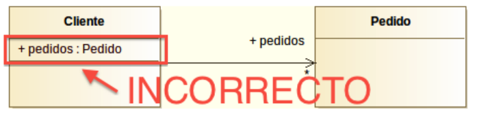
En DIA — configurar roles y multiplicidad
Haz doble clic sobre la línea de asociación para abrir sus propiedades. Verás dos columnas, Side A y Side B, donde puedes escribir el rol y la multiplicidad de cada extremo. También puedes controlar si se muestra la flecha en cada lado con el campo Mostrar flecha.
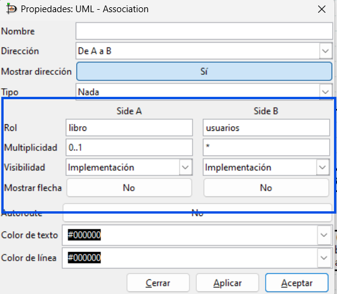
Multiplicidad¶
Indica cuántos objetos de una clase pueden relacionarse con los de la otra. Se escribe en cada extremo de la línea, y se traduce directamente en cómo declaras el atributo en Java: si el máximo es 1 guardas una referencia simple, si es "muchos" guardas una colección.
| Notación | Significado | Cómo se traduce en Java |
|---|---|---|
1 / 1..1 |
Exactamente uno | private Pelicula pelicula; |
0..1 |
Cero o uno | private Pelicula pelicula; (puede quedar a null) |
* / 0..* |
Cero o más, sin límite | private List<Pelicula> peliculas; |
0..3 |
Entre cero y tres | private List<Pelicula> peliculas; // validar máximo 3 |
2..3 |
Entre dos y tres | private List<Pelicula> peliculas; // validar mínimo 2, máximo 3 |
Error frecuente
La cardinalidad N o M no existe en UML — eso es del modelo Entidad-Relación. En UML siempre se usa * para "muchos".
2. Generalización (Herencia)¶
Permite crear una clase hija que hereda los atributos y métodos de la clase padre. Se lee como "ClaseB es un tipo de ClaseA".
Se representa con una línea sólida y una flecha triangular hueca apuntando desde la hija hacia el padre. Un ejemplo con una jerarquía de personas en un centro educativo, renderizado en DIA:
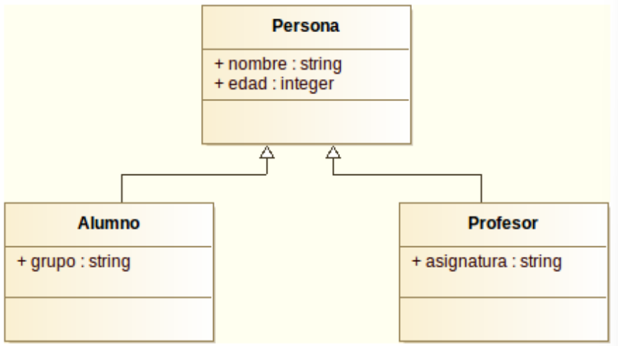
El código Java es una traducción casi directa del diagrama:
| Java | |
|---|---|
Error frecuente
Si un atributo está en la clase padre, no lo repitas en las hijas. Lo heredan automáticamente.
Herencia con varios niveles
La herencia se puede encadenar en más de un nivel: una clase hija puede a su vez tener sus propias clases hijas. Por ejemplo, Persona → Empleado → Directivo, donde Directivo hereda de Empleado lo que Empleado ya heredó de Persona.
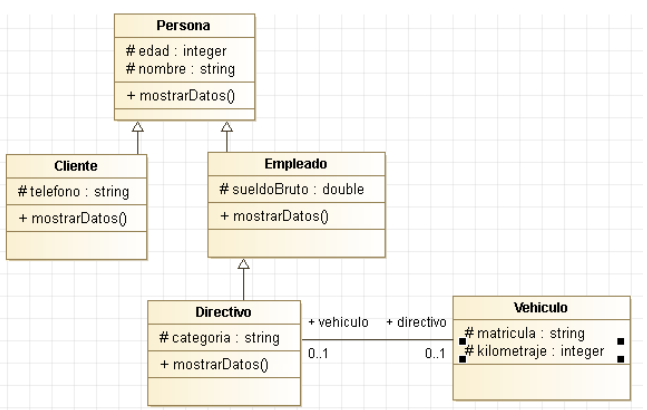
Clases y métodos abstractos¶
Una clase abstracta tiene al menos un método sin implementar. No se puede instanciar directamente. En UML, tanto la clase como sus métodos abstractos se escriben en cursiva, como en este ejemplo con FiguraGeometrica, Circulo y Rectangulo:
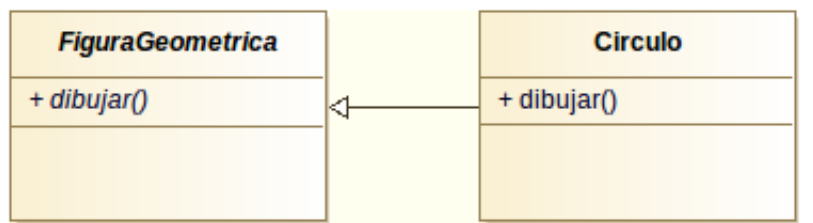
El código de una clase abstracta declara el método sin cuerpo, dejando su implementación a las clases hijas:
| Java | |
|---|---|
Recuerda
No puedes escribir new FiguraGeometrica() porque tiene un método sin implementar. Solo puedes instanciar Circulo, Rectangulo o cualquier otra clase hija que sí implemente dibujar().
En DIA — generalización
El icono de generalización en la paleta UML es una flecha con punta triangular hueca.
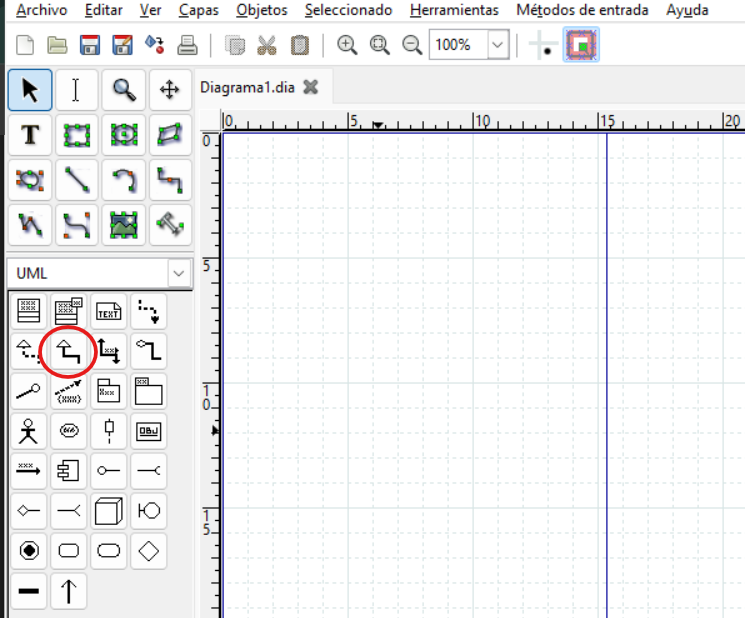
3. Realización (Interfaces)¶
Una interfaz es como una clase abstracta pura: define qué métodos debe tener una clase, pero no los implementa. En Java, se usa implements.
La realización se representa con una línea discontinua y una flecha triangular hueca que va desde las clases que implementan hacia la interfaz. Así se ve con la interfaz List y tres de sus implementaciones habituales:
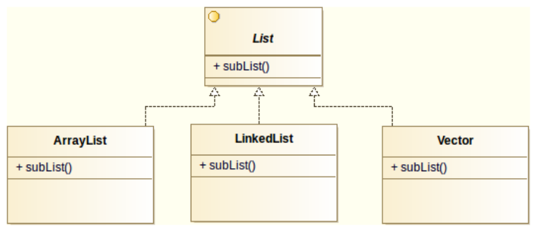
Un ejemplo más pequeño y fácil de seguir entero, con interfaz propia en vez de una de la librería estándar: una interfaz Hablador con dos clases que la implementan cada una a su manera.
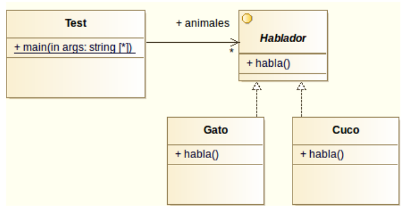
El código completo, con un main() que recorre la lista y llama a habla() sobre cada animal sin saber de qué tipo concreto es:
Test nunca pregunta si el animal es un Gato o un Cuco: solo sabe que es un Hablador y le llama a habla(). Cada objeto responde con su propia versión del método ("Miau" o "Cu cu") sin que Test tenga que distinguirlos. Esto es polimorfismo: mismo mensaje, comportamiento distinto según el objeto real.
En DIA — realización
El icono de realización en la paleta UML es una línea discontinua con triángulo.
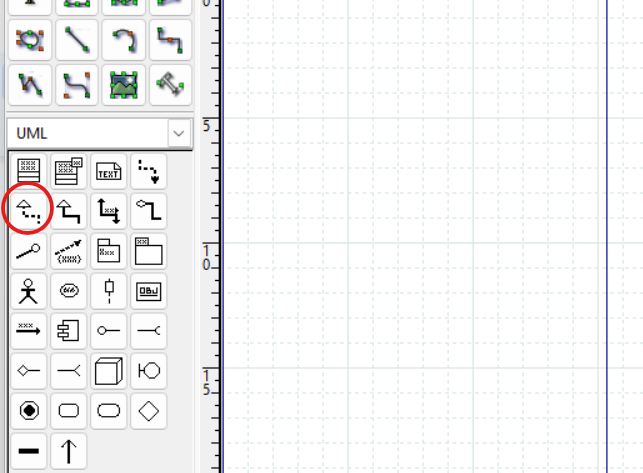
4. Agregación¶
Relación "todo–parte" donde las partes pueden existir sin el todo. El rombo va siempre en el lado del todo, como en este ejemplo entre un coche y sus ruedas:
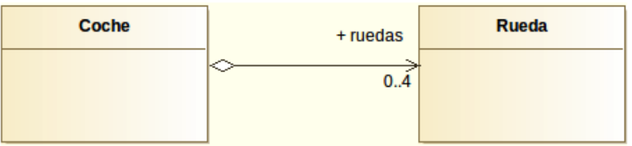
5. Composición¶
Igual que la agregación pero las partes no pueden existir sin el todo. Rombo relleno en el lado del todo, como en esta relación entre una empresa y sus departamentos:
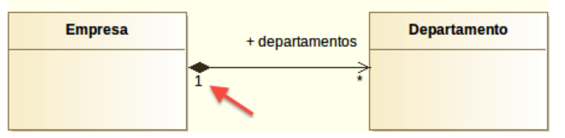
Error frecuente
Tanto el rombo de agregación como el de composición van en el lado del todo, no en el de la parte.
En DIA — composición
En DIA solo existe el icono de Agregación (rombo hueco). Para convertirla en composición, crea la agregación primero y después haz doble clic sobre la línea → campo Tipo → selecciona Composición en el desplegable.
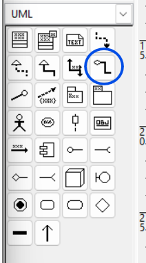
Una vez dibujada la línea de agregación, cambia su tipo desde sus propiedades:
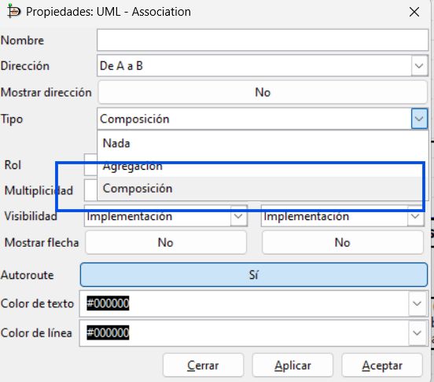
6. Dependencia¶
Una clase usa a otra de forma temporal (como parámetro, variable local o tipo de retorno de un método), pero sin guardar una referencia permanente. Si la clase B cambia, puede afectar a A.
Se representa con una línea discontinua con una flecha en "V". Mapa tiene métodos que reciben o devuelven Coordenadas, pero no la guarda como atributo:
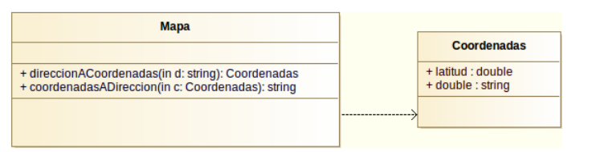
Fíjate en que ni direccionACoordenadas ni coordenadasADireccion guardan la Coordenadas recibida o devuelta en ningún campo de Mapa: la usan de paso, y con eso ya basta para que exista dependencia.
Recuerda
Si la clase guarda la referencia en un atributo, es una asociación (o agregación/composición). Si solo la usa puntualmente, es una dependencia.
En DIA — dependencia
El icono de dependencia en la paleta UML es una línea punteada con flecha en "V".
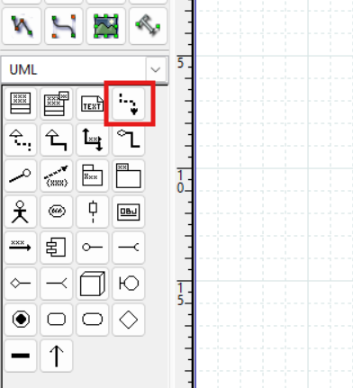
7. Clase asociativa¶
Cuando una relación tiene sus propios atributos o métodos, se representa como una clase unida a la línea de asociación con una línea discontinua. La matrícula no pertenece ni solo al alumno ni solo a la asignatura: pertenece a la relación entre ambos.
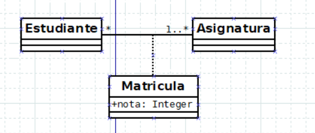
En DIA — clase asociativa
DIA no tiene un elemento específico para esto. El procedimiento es:
- Dibuja las dos clases con su asociación normal.
- Crea la clase adicional (la que representa la relación).
- Usa la herramienta de línea estándar (paleta de herramientas generales, no la paleta UML) para unir esa clase a la línea de asociación.
- Haz doble clic sobre esa línea → cambia el Estilo de la línea a discontinuo (punteado).
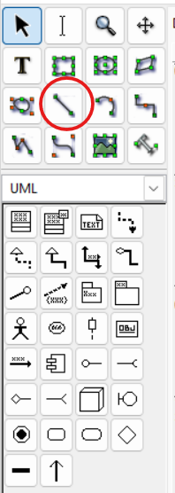
Después, cambia el estilo de esa línea a discontinuo desde sus propiedades:
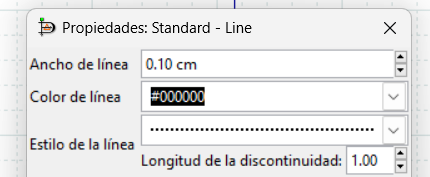
8. ¿Generalización o realización?¶
Ambas representan relaciones entre clases, pero tienen un uso diferente:
| Generalización (herencia) | Realización (interfaz) | |
|---|---|---|
| Palabra clave Java | extends |
implements |
| ¿Cuántas puede tener una clase? | Solo una clase padre | Múltiples interfaces |
| La clase padre tiene implementación | Sí (puede tener métodos con código) | No (la interfaz solo declara la firma) |
| Cuándo usarla | La clase hija es un tipo de la padre | La clase promete comportarse según el contrato |
Regla práctica
Si necesitas que una clase tenga comportamiento de varios tipos distintos, usa interfaces (realización). Java solo permite heredar de una clase padre, pero puedes implementar tantas interfaces como quieras: un BarcoMercante podría realizar a la vez VehiculoMaritimo y VehiculoMercancias, algo imposible con herencia.
9. ¿Clase abstracta o interfaz?¶
Tanto las clases abstractas como las interfaces definen métodos que deben implementar las subclases. La diferencia principal es:
| Clase abstracta | Interfaz | |
|---|---|---|
| Puede tener atributos de instancia | ✅ Sí | ❌ No (solo static final) |
| Puede tener métodos con implementación | ✅ Sí | ❌ No (en Java < 8) |
| Una clase puede extender / implementar | Solo una | Varias |
| Relación UML | Generalización (línea sólida) | Realización (línea discontinua) |
Elige clase abstracta cuando las subclases comparten código (atributos y métodos ya implementados). Elige interfaz cuando solo quieras garantizar que un comportamiento existe, sin importar cómo se implementa.